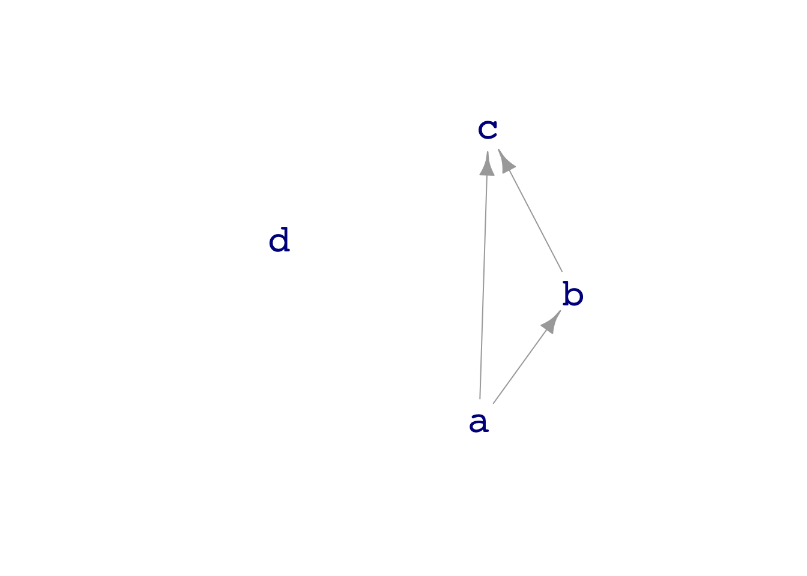

Math 300R NTI Lesson 38
False discovery
Objectives
38.1
Solution
Reading
One or more of these articles:
Lesson
Discussion of article(s).
What should the p-value become
Consider dag07
Node d is not connected to any of the other nodes. There should accordingly be a “null” relationship between d and the others. On the other hand, b and c are connected (although the connection is confounded with a).
Let’s model d by b and look at the p-value:
Sample <- sample(dag07, size=50)
lm(d ~ b, data=Sample) %>% broom::tidy()# A tibble: 2 × 5
term estimate std.error statistic p.value
<chr> <dbl> <dbl> <dbl> <dbl>
1 (Intercept) 0.0556 0.132 0.422 0.675
2 b -0.121 0.0985 -1.23 0.225The p-value on the b coefficient is large, greater than the usual threshold of 0.05.
On the other hand, b and c are connected and the p-value (with this much data) is tiny.
lm(c ~ b, data = Sample) %>% broom::tidy()# A tibble: 2 × 5
term estimate std.error statistic p.value
<chr> <dbl> <dbl> <dbl> <dbl>
1 (Intercept) -0.106 0.151 -0.705 4.84e- 1
2 b -1.55 0.113 -13.8 2.52e-18Imagine a setting where a popular (but unproven!) hypothesis has emerged: that b and d are really related. 100 different research teams rush in to be the first to demonstrate, each generating their own experimental data. We’ll simulate this and collect the summary of the b coefficient w.r.t. d. [First show the statement without the do() to show what each row looks like. Then run the 100 trials and look for small p-values]
All_groups <- do(100) * {
lm(d ~ b, data=sample(dag07, size=50)) %>%
broom::tidy() %>%
filter(term == 'b')
}Did any of the groups get a “significant” result?
All_groups %>%
filter(p.value < 0.05)# A tibble: 4 × 7
term estimate std.error statistic p.value .row .index
<chr> <dbl> <dbl> <dbl> <dbl> <int> <dbl>
1 b 0.298 0.105 2.84 0.00651 1 42
2 b -0.199 0.0889 -2.24 0.0297 1 76
3 b 0.232 0.0934 2.48 0.0166 1 78
4 b -0.211 0.0989 -2.14 0.0375 1 99In the context of 100 trials being done, it’s understandable that some of the groups happened to get a p-value < 0.05. But suppose that only the groups with small p-values publish their results? Then it looks as if they found a “significant” result.
How can we guard against this accidental generation of significant results? The standard answer in scientific work is to replicate the result: the labs should try again to confirm the result they got in the first study. (In practice, there are strong social/financial/career pressures against conducting such replications. These need to be overcome to guard against false discovery.)
Here’s a simulation where each lab group runs the study twice. Do any get small p-values both times?
Replicated_groups <- do(100) * {
do(2) * {
lm(d ~ b, data=sample(dag07, size=50)) %>%
broom::tidy() %>%
filter(term == 'b')
} %>% .$p.value
}
Pairs <- Replicated_groups %>%
tidyr::pivot_wider(names_from = .row, values_from = result)
Pairs %>% filter(`1` < 0.05, `2` < 0.05)# A tibble: 0 × 3
# … with 3 variables: .index <dbl>, 1 <dbl>, 2 <dbl>A better approach. As a rule of thumb, once you have a sample size \(n\) that gives a genuine p \(\approx 0.05\), doubling \(n\) should reduce p by a factor of about 10. But if p is merely accidentally small, doubling the sample size won’t have any effect.
A demonstration when there is a genuine relationship:
lm(c ~ a, data = sample(dag07, size=5)) %>% broom::tidy() %>%
filter(term == 'a')# A tibble: 1 × 5
term estimate std.error statistic p.value
<chr> <dbl> <dbl> <dbl> <dbl>
1 a 1.63 0.968 1.68 0.191lm(c ~ a, data = sample(dag07, size=10)) %>% broom::tidy() %>%
filter(term == 'a')# A tibble: 1 × 5
term estimate std.error statistic p.value
<chr> <dbl> <dbl> <dbl> <dbl>
1 a 0.957 0.585 1.64 0.141Let’s re-run the simulation with \(n\) doubled, that is, size=100 compared to the previous size=50
Bigger_n <- do(100) * {
lm(d ~ b, data=sample(dag07, size=100)) %>%
broom::tidy() %>%
filter(term == 'b')
}Are these p-values smaller than in the trials with size=50?
Learning Checks
38.1
Solution